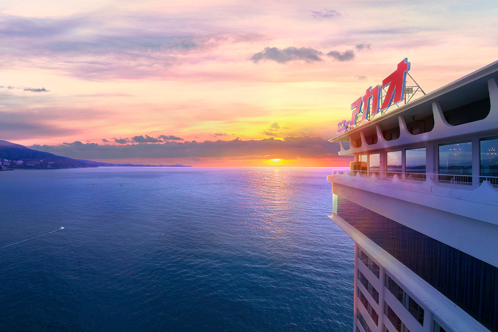
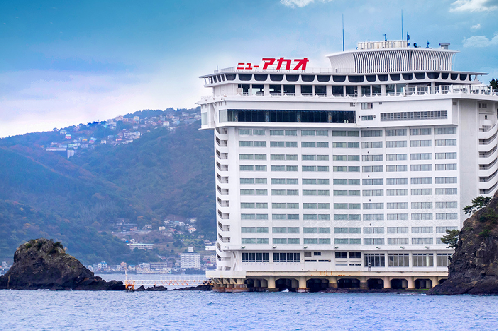
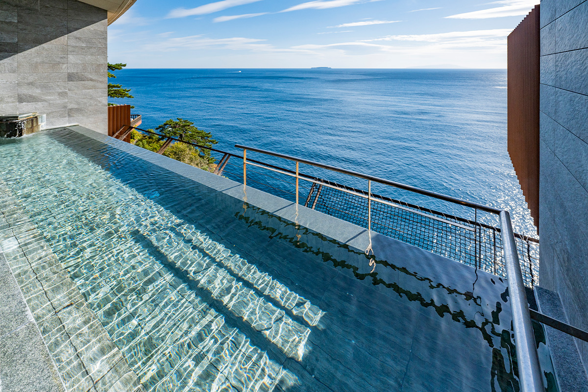
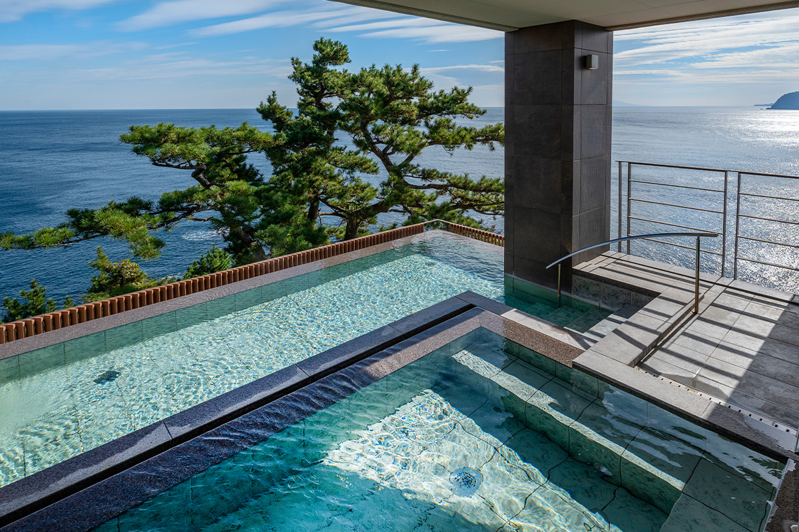
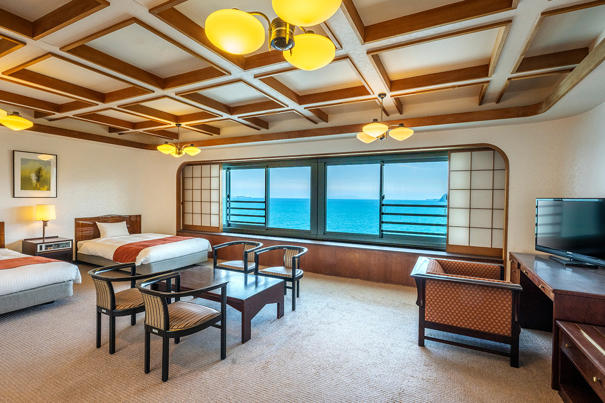
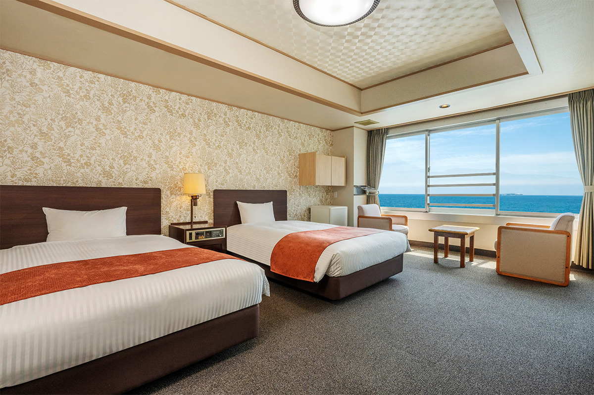
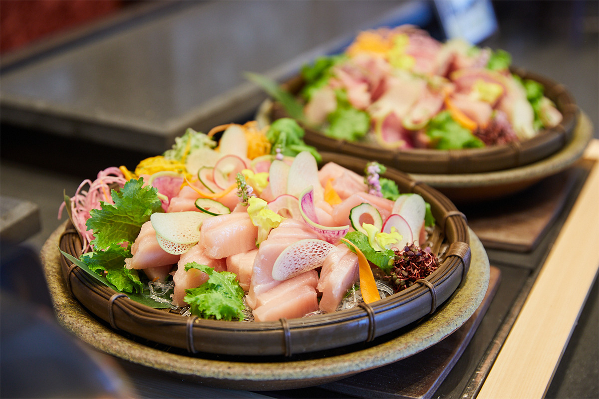
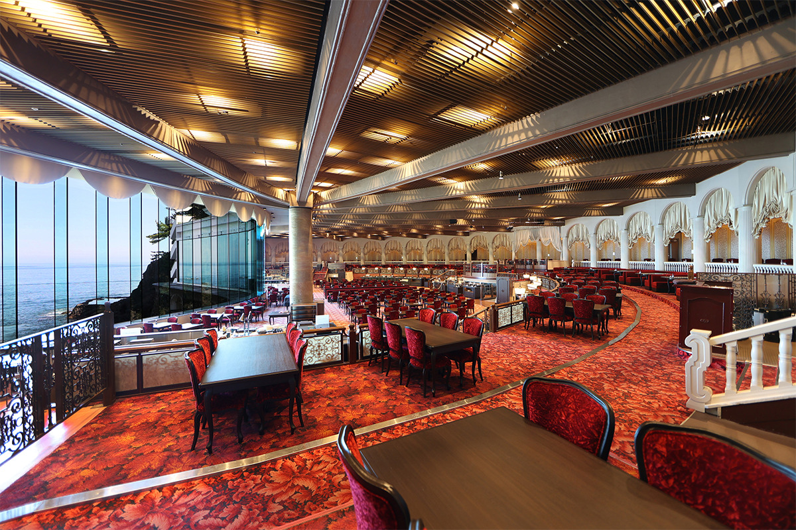
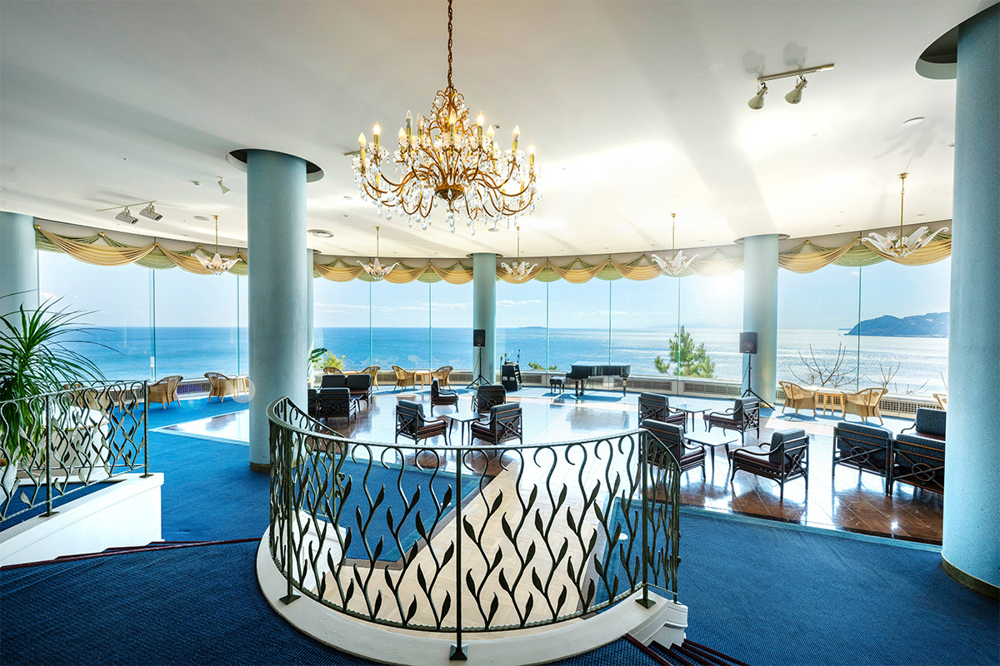
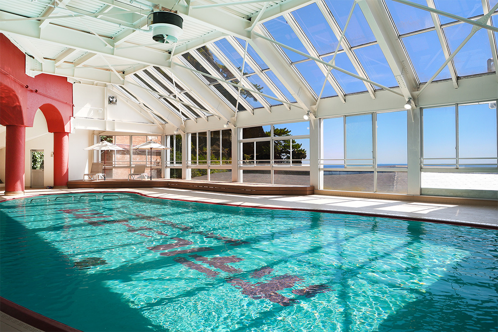

Префектура Сидзуока · Атами · где остановиться
Hotel New Akao: отель над морем, с которым у Атами связана целая эпоха

Белый корпус Hotel New Akao будто стоит прямо в море, и для японцев он давно стал символом Атами. В июле 2023 года отель после обновления снова заработал целиком.
История
Отель, построенный над водой
Атами лежит на самом востоке префектуры Сидзуока, и его онсэн входит в тройку самых знаменитых горячих источников Японии. Недалеко от квартала онсэнов начинается бухта Нисикигаура, живописный участок скалистого берега. На её утёсе и стоит курортный отель Hotel New Akao.
Он открылся в 1973 году. Атами тогда переживал расцвет: сюда ехали молодожёны в свадебное путешествие и целые группы туристов. Hotel New Akao был среди тех, кто задавал тон местным гостиницам с онсэнами, и быстро стал главной приметой города.

Здание, выдвинутое к самому морю, редкость даже для Японии. Поначалу ведомства долго не давали разрешения на стройку. Проект поручили одной из лучших команд страны, а фундамент закрепили особым способом: десятки тысяч стальных тросов, как струны рояля, натянуты и заякорены в коренной скале. Только после этого стройку разрешили, и отель над морем был закончен.
Отель состоит из двух корпусов. В Horizon Wing находятся стойка регистрации, лаунж, большие купальни и отдельные купальни с видом, которые можно взять только для себя. В Ocean Wing работают огромный главный ресторан с панорамой, два бассейна, купальня под открытым небом и игровой зал. В июле 2023 года после обновления открылся Ocean Wing, и вместе с уже работавшими Horizon Wing и купальнями «Спариум Нисики» отель заработал целиком. Здесь заново открывают Атами эпохи Сёва (1926–1989), времени больших курортных поездок, только в современном прочтении.
Онсэн
Купальни, вода в которых сливается с морем
Вода онсэна Атами насыщена морскими минералами, и её считают полезной для кожи. Это натриево-кальциевый хлоридный источник с очень высокой концентрацией солей.
В отдельном корпусе с купальнями «Спариум Нисики» устроена купальня под открытым небом в стиле инфинити: кажется, что поверхность воды переходит прямо в море. Есть и каскадная купальня, ступени которой продуманы ради вида, а из каждой крытой купальни тоже хорошо видно море.
Море меняется каждую минуту, и лежать в горячей воде, глядя на него, удивительно спокойно. После такой купальни отдыхают и тело, и голова.


Номера
От номера на двоих до комнаты для собаки
Все 350 номеров смотрят на море. Перед окнами во всю ширину раскрывается горизонт, а утром солнце встаёт прямо из тёмно-синей воды.
Номера здесь очень разные: европейские, японские, смешанные, на двоих и на компанию до 12 человек. Есть даже номера для гостей с собаками. По специальному тарифу для гостей с питомцем еду приносят в номер, и вечер можно провести вместе с собакой без спешки.


Еда
Рыба и овощи из окрестностей
Местные продукты по сезону стали основой здешней кухни: меню меняется вместе с временами года.

«Мэйн дайнинг Нисики» это один из самых больших в Идзу ресторанов со сценой, и размах его зала поражает с первого шага. Из огромных окон видны скалы Нисикигауры совсем рядом. Завтрак, обед и ужин подают в формате шведского стола. Вечером на столах около 90 блюд, а на открытой кухне готовят прямо при гостях. На завтрак есть японские и европейские блюда: три вида рисовых мисок, которые можно залить ароматным бульоном даси и превратить в отядзукэ, яичница с беконом из яиц Сидзуоки, свежий салат из овощей «Мисима сэйроку», выращенных на склонах у города Мисима. В обед подают девять горячих блюд, салатный бар, десерты и напитки. Есть с видом на открытое море особенно приятно.

В Horizon Wing есть ещё два ресторана с местными продуктами: французский «Бонёр» и японский «Маиоги», у каждого своя обстановка.
Досуг
Бассейны, море и игры в духе Сёва


Летом открыт бассейн с морской водой прямо у моря. Отель предлагает прогулки на каяках и рыбалку, а в квартале развлечений «Нигиваи ёкотё» стоят тиры и игровые автоматы в духе эпохи Сёва.
Синее море до горизонта, роскошь старого курорта, хороший онсэн и местная рыба: в Hotel New Akao собрано всё, за чем едут в Атами.
Hotel New Akao
- Адрес
- префектура Сидзуока, Атами, Атами, 1993-250
- Телефон
- +81 557-83-6161
- Номера
- 350
- Цены / Вход
- от 17 380 иен с человека за ночь с завтраком и ужином, при двух гостях в номере, с налогом и сервисным сбором (2023 год)
- Заезд / выезд
- 15:00 / 10:00
- Как добраться
- от станции JR Атами около 10 минут на автобусе отеля; на машине около 60 минут от развязки Ацуги скоростной дороги Томэй